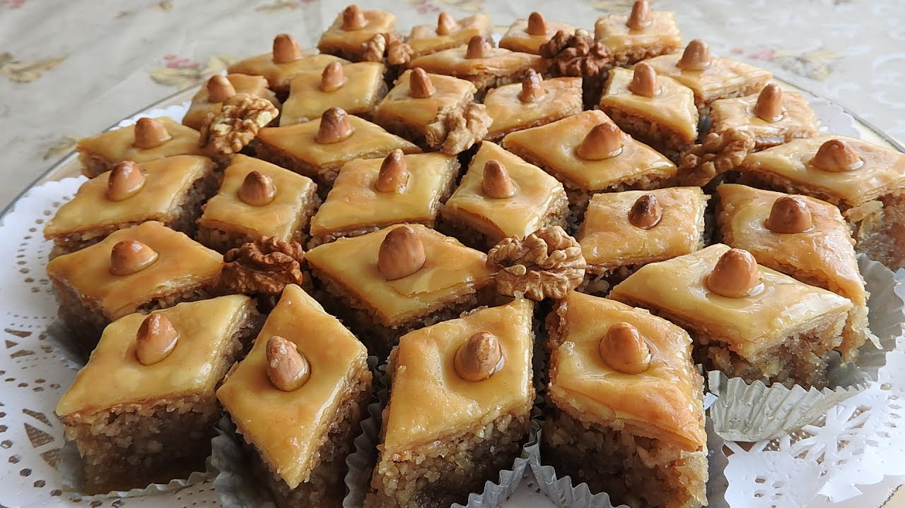

Description
Baklava is a delicious, flaky dessert made with thin
sheets of dough soaked in honey and layered with nuts.
Ingredients
For the dough
- 4 cups of flour.
- A cup and a half of butter or obesity.
- 2 cups of water.
- a glass of starch.
- A pinch of salt.
For the filling
- Half a cup of roasted almonds.
- Half a cup of roasted hazelnuts.
- Half a cup of roasted walnuts.
- 2 tablespoons of white sugar.
- Half a tea spoon of cinnamon.
- A quarter teaspoon of ground cloves.
- Half a tablespoon of rose water.
- 2 tablespoons of honey diluted with a teaspoon of rose water.
Steps
For the syrup
- Mix both sugar and water together in a pot,
put the mixture on the fire, and leave them until it boils.
- Add lemon juice, rose water, and stir.
- Put the ground cardamom, and leave the mixture on the stove for about 5 minutes until it boils,
then remove it and leave it aside until it cools down.
For the Baklava
-
Grind all the ingredients of the nuts into a powder, then put
them in a saucepan over low heat, with the rest of the filling
ingredients, and mix well, then set aside until it cools down.
-
Place both the flour and the obesity together in a bowl, and
gradually mix with the fingers of the hand until the mixture
is homogeneous.
-
Salt is added, and the dough is rubbed well to complete homogeneity.
-
Gradually add water, while continuing to knead by hand, to obtain a cohesive dough.
-
Leave the dough in a warm place, and leave for about a third of an hour until it rests.
-
Cut the dough, then leave it for half an hour to rest, covering it with a clean, damp towel.
-
Brush the surface with a little starch, put the dough pieces in the starch, then roll it out
with a rolling pin until it is thin.
-
After spreading the dough layers are placed on top of each other, then brushed with a
little oil in a plastic bag, and placed in the refrigerator for an hour to firmness.
-
The dough is removed from the refrigerator, left for 5 minutes, then greased with butter,
then half of the dough is placed in a tray greased with ghee, and the filling is placed
on top of it, then the rest of the dough layers, then greased with butter.
-
Cut into squares, then enter the oven, leave for 20 minutes, then remove from the oven,
and pour syrup over it.
-
Serve it with tea and enjoy your meal.
Return to Top
Return to Home Page